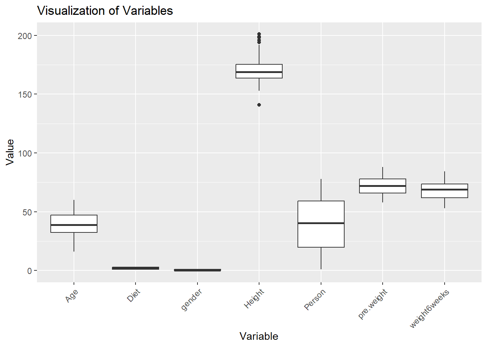
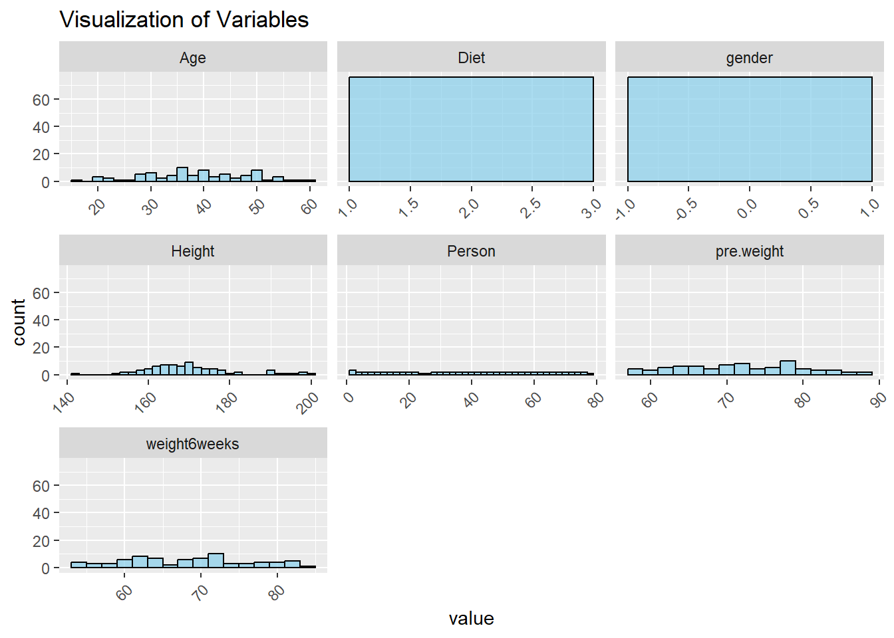
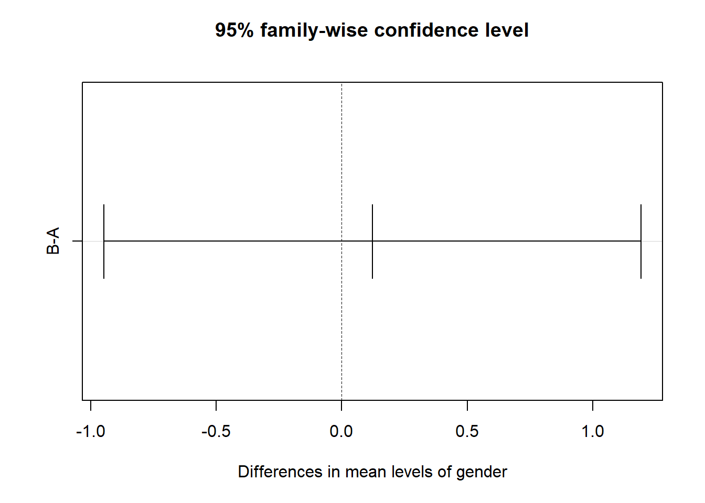
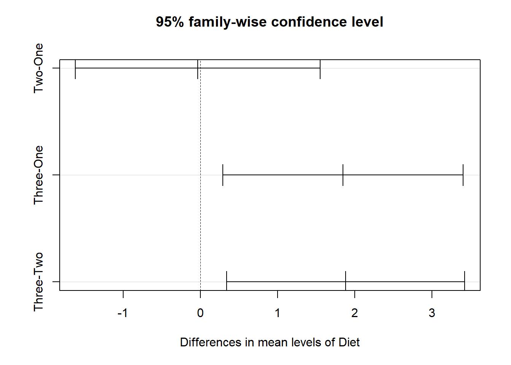
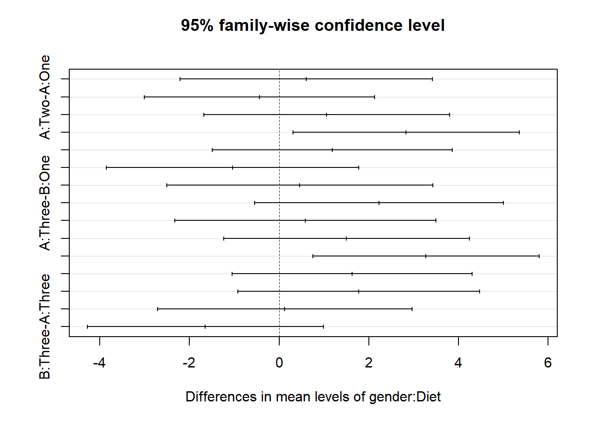

# load the data in here
read.csv( "DietData.csv") -> ddAnalysis of Variance
Homework
Here is some new data to play with a bit to explore one-way and two-way analysis of variance models. These data represent weight data associated with three different diet types. There are 76 observations of individuals with the following characteristics:
- Gender (0/1)
- Age (earth years. 🤓)
- Height (cm)
- Pre.weight & weight6weeks (kg)
- Diet (1,2,3)
The data are located as a CSV file named DietData.csv linked from the Canvas page. Load the data in and format things so they look correctly to you.
#load packages
library(ggplot2)
library(tidyverse)
library(dplyr)
library(kableExtra)Exploratory Data Anlsysis
One of the first things to do is to look at the data and see if there are any obvious things. Go ahead and explore these data visually. What do you see?
# Data visualization
dd |>
gather(key = "variable", value = "value") -> dd1
ggplot(dd1, aes(x = variable, y = value)) +
geom_boxplot() +
labs (title = "Visualization of Variables",
x = "Variable",
y = "Value") +
theme(axis.text.x = element_text(angle = 45, hjust = 1))
#Data Vis p2
ggplot(dd1, aes(x = value)) +
geom_histogram(binwidth = 2, fill = "skyblue", color = "black", alpha = 0.7) +
facet_wrap(~ variable, scales = "free_x") + # One histogram for each variable
labs (title = "Visualization of Variables",
xlab = "Value",
ylab = "Frequency") +
theme(axis.text.x = element_text(angle = 45, hjust = 1))
Nothing super crazy appears when looking at the data visually. Height appears to be the only variable with some outliers, the rest of the data appears to be fairly even in distribution.
Estimating Mean Values
Make a table of Weight Loss by gender and diet.
# Table output
dd |>
mutate( WeightLoss = pre.weight - weight6weeks) -> dd.WL
dd.WL |>
select( Person,
gender,
Diet,
WeightLoss) |>
arrange( Person) -> dd.WL
dd.WL |>
kable( caption = "Weight Loss by Gender and Diet",
digits = 3) |>
kable_classic( full_width = FALSE,
lightable_options = "striped") |>
row_spec( 0, bold = TRUE)| Person | gender | Diet | WeightLoss |
|---|---|---|---|
| 1 | 0 | 1 | 3.8 |
| 2 | 0 | 1 | 6.0 |
| 3 | 0 | 1 | 0.7 |
| 4 | 0 | 1 | 2.9 |
| 5 | 0 | 1 | 2.8 |
| 6 | 0 | 1 | 2.0 |
| 7 | 0 | 1 | 2.0 |
| 8 | 0 | 1 | 8.5 |
| 9 | 0 | 1 | 1.9 |
| 10 | 0 | 1 | 3.1 |
| 11 | 0 | 1 | 1.5 |
| 12 | 0 | 1 | 3.0 |
| 13 | 0 | 1 | 3.6 |
| 14 | 0 | 1 | 0.9 |
| 15 | 1 | 1 | -0.6 |
| 16 | 1 | 1 | 1.1 |
| 17 | 1 | 1 | 4.5 |
| 18 | 1 | 1 | 4.1 |
| 19 | 1 | 1 | 9.0 |
| 20 | 1 | 1 | 2.4 |
| 21 | 1 | 1 | 3.9 |
| 22 | 1 | 1 | 3.5 |
| 23 | 1 | 1 | 5.1 |
| 24 | 1 | 1 | 3.5 |
| 27 | 0 | 2 | -2.1 |
| 28 | 0 | 2 | 2.0 |
| 29 | 0 | 2 | 1.7 |
| 30 | 0 | 2 | 4.3 |
| 31 | 0 | 2 | 7.0 |
| 32 | 0 | 2 | 0.6 |
| 33 | 0 | 2 | 2.7 |
| 34 | 0 | 2 | 3.6 |
| 35 | 0 | 2 | 3.0 |
| 36 | 0 | 2 | 2.0 |
| 37 | 0 | 2 | 4.2 |
| 38 | 0 | 2 | 4.7 |
| 39 | 0 | 2 | 3.3 |
| 40 | 0 | 2 | -0.5 |
| 41 | 1 | 2 | 4.2 |
| 42 | 1 | 2 | 2.4 |
| 43 | 1 | 2 | 5.8 |
| 44 | 1 | 2 | 3.5 |
| 45 | 1 | 2 | 5.3 |
| 46 | 1 | 2 | 1.7 |
| 47 | 1 | 2 | 5.4 |
| 48 | 1 | 2 | 6.1 |
| 49 | 1 | 2 | 7.9 |
| 50 | 1 | 2 | -1.4 |
| 51 | 1 | 2 | 4.3 |
| 52 | 0 | 3 | 7.0 |
| 53 | 0 | 3 | 5.6 |
| 54 | 0 | 3 | 3.4 |
| 55 | 0 | 3 | 6.8 |
| 56 | 0 | 3 | 7.8 |
| 57 | 0 | 3 | 5.4 |
| 58 | 0 | 3 | 6.8 |
| 59 | 0 | 3 | 7.2 |
| 60 | 0 | 3 | 7.0 |
| 61 | 0 | 3 | 7.3 |
| 62 | 0 | 3 | 0.9 |
| 63 | 0 | 3 | 7.6 |
| 64 | 0 | 3 | 4.1 |
| 65 | 0 | 3 | 6.3 |
| 66 | 0 | 3 | 5.0 |
| 67 | 1 | 3 | 2.5 |
| 68 | 1 | 3 | 0.9 |
| 69 | 1 | 3 | 3.5 |
| 70 | 1 | 3 | 0.5 |
| 71 | 1 | 3 | 2.8 |
| 72 | 1 | 3 | 8.6 |
| 73 | 1 | 3 | 4.5 |
| 74 | 1 | 3 | 2.8 |
| 75 | 1 | 3 | 4.1 |
| 76 | 1 | 3 | 5.3 |
| 77 | 1 | 3 | 9.2 |
| 78 | 1 | 3 | 6.1 |
1-Way Analysis of Variance
Diet Issues:
The underlying linear model.
\[ y_{ij} = \mu + \tau_{Diet, i} + \epsilon_j \]
Test the null hypothesis, \(H_O:\) There is no effect of diet on weight loss (e.g., \(\tau_{Diet-1} = \tau_{Diet-2} = \tau_{Diet-3} = 0.0\)). Is there evidence for one diet producing more weight loss than the others? Create an aov analysis and assign it to the variable fit.diet and examine its contents.
# Define model
dd.WL$Diet <- factor(dd.WL$Diet, levels = c(1, 2, 3), labels = c("One", "Two", "Three"))
#str(dd.WL)
fit.diet <- aov(WeightLoss ~ factor(Diet), data = dd.WL)
summary(fit.diet) Df Sum Sq Mean Sq F value Pr(>F)
factor(Diet) 2 60.5 30.264 5.383 0.0066 **
Residuals 73 410.4 5.622
---
Signif. codes: 0 '***' 0.001 '**' 0.01 '*' 0.05 '.' 0.1 ' ' 1Are they all significantly different? Try the TukeyHSD() Interpret the results.
# Posthoc test
tukey_result.d <- TukeyHSD(fit.diet)
tukey_result.d Tukey multiple comparisons of means
95% family-wise confidence level
Fit: aov(formula = WeightLoss ~ factor(Diet), data = dd.WL)
$`factor(Diet)`
diff lwr upr p adj
Two-One -0.032000 -1.6530850 1.589085 0.9987711
Three-One 1.848148 0.2567422 3.439554 0.0188047
Three-Two 1.880148 0.3056826 3.454614 0.0152020The results from the TukeyHSD test show us that there is a statistically significant difference between the means of diets Three-One and Three-Two at the 95% confidence interval. These two means are essentially identical.
How much of the variation is explained? If you notice when you do a summary from a lm() (regression) model, it gives you the \(R^2\) values directly (remember \(R^2 = \frac{SS_{model}}{SS_{Error}}\)). Does summary() of your aov model give you that?
No, summary of an aov does not provide an \(R^2\) value for the model.
# How much variance?
df.1 <- dd.WL[ dd.WL$Diet == "One",]
df.2 <- dd.WL[ dd.WL$Diet == "Two",]
df.3 <- dd.WL[ dd.WL$Diet == "Three",]
Diets <- c("One","Two","Three")
WeightLoss <- c(mean(df.1$WeightLoss), mean(df.2$WeightLoss), mean( df.3$WeightLoss))
WeightLoss.SE <- c(sd(df.1$WeightLoss), sd(df.2$WeightLoss), sd( df.3$WeightLoss))
WeightLoss.SEM <- WeightLoss.SE / sqrt(50)
sd <- paste( format(WeightLoss,digits=2), "+/-", format(WeightLoss.SE, digits=3))
se <- paste( format(WeightLoss,digits=2), "+/-", format(WeightLoss.SEM, digits=3))
df <- data.frame( Diets, sd, se )
names(df) <- c("Diets","Mean Weight Loss +/- SD", "Weight Loss +/- SE")
kable(df,row.names = FALSE,digits = 3,align = "lcc") |>
kable_classic( full_width = FALSE,
lightable_options = "striped") |>
row_spec( 0, bold = TRUE)| Diets | Mean Weight Loss +/- SD | Weight Loss +/- SE |
|---|---|---|
| One | 3.3 +/- 2.24 | 3.3 +/- 0.317 |
| Two | 3.3 +/- 2.46 | 3.3 +/- 0.349 |
| Three | 5.1 +/- 2.40 | 5.1 +/- 0.339 |
Since I asked the question, the answer is probably no. Why does it not do this? Probably for historical reasons, which are a bit of a pain in the backside. That being said, there are some tidy ways to fix this issue. I’m going to use the broom package which allows us to clean up (or tidy if you will) the model objects. This will take the model object and pull out all the ANOVA table stuff and put it into a tibble.
library( broom )
# use your model fit next (I called mine fit.diet)
tidy_diet <- tidy( fit.diet )
#tidy_dietNow, since it is all easily accessible, we can calculate the \(R^2\) from the new model output.
# Estimate the variance explained from the raw sums of squares
r2_Diet <- tidy_diet$sumsq[1] / sum( tidy_diet$sumsq )
r2_Diet [1] 0.1285269Gender:
The underlying linear model.
\(y_{ij} = \mu + \tau_{gender, i} + \epsilon_j\)
Independent of the diet, test the null hypothesis \(H_O:\) There is no difference in weight loss between genders (e.g., ${gender-0} = {gender-2} = 0.0 $). Is there evidence for one gender being significantly different than another? How much of the variation is explained (another \(R^2\) by gender)?
# partition effects
#gender as factor
dd.WL$gender <- factor(dd.WL$gender, levels = c(0,1), labels = c("A", "B"))
#str(dd.WL)
#aov test
fit.gender <- aov(WeightLoss ~ factor(gender), data = dd.WL)
summary(fit.gender) Df Sum Sq Mean Sq F value Pr(>F)
factor(gender) 1 0.3 0.278 0.044 0.835
Residuals 74 470.7 6.360 # Posthoc test
tukey_result.g <- TukeyHSD(fit.gender)
tukey_result.g Tukey multiple comparisons of means
95% family-wise confidence level
Fit: aov(formula = WeightLoss ~ factor(gender), data = dd.WL)
$`factor(gender)`
diff lwr upr p adj
B-A 0.1221283 -1.04081 1.285067 0.8348274#R-sq of gender
tidy_gender <- tidy( fit.gender )
r2_gender <- tidy_gender$sumsq[1] / sum( tidy_gender$sumsq )
r2_gender[1] 0.0005913517How do you interpret these results thus far?
My aov test provided a high p-value of 0.835, indicating that there is no statistically significant relationship between gender and weight loss. Meaning we failed to reject the null hypothesis. The produced R-Squared was also dismal, with less than 1% (0.06%) of the variation in weight loss being explained by gender.
Do genders respond differently to diets?
\(y_{ijk} = \mu + \tau_{Diet,i} + \tau_{gender,j} + \epsilon_k\)
So here we do something a bit different. We want to simultaneously ask the following questions:
- Do diets influence weight loss?
- Do genders influence weight loss?
- Is there an interaction where different genders respond differently to different diets?
In \(R\), this is done as:
# diet model
fit.diet <- aov(WeightLoss ~ factor(Diet), data = dd.WL)# gender model
fit.gender <- aov(WeightLoss ~ factor(gender), data = dd.WL)# interaction model
#aov
fit.interaction <- aov(WeightLoss ~ gender * Diet, data = dd.WL)
summary(fit.interaction) Df Sum Sq Mean Sq F value Pr(>F)
gender 1 0.3 0.278 0.052 0.82062
Diet 2 60.4 30.209 5.619 0.00546 **
gender:Diet 2 33.9 16.952 3.153 0.04884 *
Residuals 70 376.3 5.376
---
Signif. codes: 0 '***' 0.001 '**' 0.01 '*' 0.05 '.' 0.1 ' ' 1tukey_result.i <- TukeyHSD(fit.interaction)
tukey_result.i Tukey multiple comparisons of means
95% family-wise confidence level
Fit: aov(formula = WeightLoss ~ gender * Diet, data = dd.WL)
$gender
diff lwr upr p adj
B-A 0.1221283 -0.9480861 1.192343 0.8206233
$Diet
diff lwr upr p adj
Two-One -0.03484966 -1.6215073 1.551808 0.9984761
Three-One 1.84475570 0.2871469 3.402365 0.0162482
Three-Two 1.87960536 0.3385771 3.420634 0.0128844
$`gender:Diet`
diff lwr upr p adj
B:One-A:One 0.6000000 -2.2129628 3.4129628 0.9887997
A:Two-A:One -0.4428571 -3.0107291 2.1250148 0.9958151
B:Two-A:One 1.0590909 -1.6782698 3.7964516 0.8656520
A:Three-A:One 2.8300000 0.3052886 5.3547114 0.0191170
B:Three-A:One 1.1833333 -1.4893925 3.8560592 0.7855223
A:Two-B:One -1.0428571 -3.8558199 1.7701056 0.8852416
B:Two-B:One 0.4590909 -2.5093998 3.4275816 0.9975014
A:Three-B:One 2.2300000 -0.5436187 5.0036187 0.1863470
B:Three-B:One 0.5833333 -2.3256625 3.4923292 0.9915569
B:Two-A:Two 1.5019481 -1.2354126 4.2393087 0.5963201
A:Three-A:Two 3.2728571 0.7481458 5.7975685 0.0040103
B:Three-A:Two 1.6261905 -1.0465354 4.2989163 0.4833188
A:Three-B:Two 1.7709091 -0.9260048 4.4678230 0.3965102
B:Three-B:Two 0.1242424 -2.7117126 2.9601974 0.9999949
B:Three-A:Three -1.6466667 -4.2779524 0.9846191 0.4513580What is the \(R^2\) for this model?
# best model variance explained
tidy_interaction <- tidy( fit.interaction )
r2_interaction <- tidy_interaction$sumsq[1] / sum( tidy_interaction$sumsq )
r2_interaction[1] 0.0005913517Which Model is Best?
How would you compare the models you generated? How do you interpret the findings?
plot( TukeyHSD( fit.interaction))


Explain, in words, your findings and interpretation of these findings
Of the three models that I created, only two of the three variables showed a statistically significant relationship; diet (p-val: 0.00546), and the interaction of gender and diet (P-val: 0.04884). Of the individual diets, the relationship between diet three and diet one (p-val: 0.0162), and diet three and diet two (p-val: 0.0129) were significant, diet two and diet one were not. Looking at the interaction of gender and diet, only two of the fifteen combinations were significant; Gender A: Diet 3 - Gender A: Diet 1 (P-val: 0.019), and Gender A: Diet Three- Gender A: Diet Two (P-val: 0.004). The interaction model findings are interesting because of the two combinations that were significant, there was only one gender (A), however gender was the only variable that was not significant on its own. Overall, it appears that diet (and the type of diet) is the most important factor in relation to weight loss. Though certain gender and diet combos can be significant.